1. The first book I remember reading was The Wizard of Oz.
2. In my lifetime, I have received eight Cross pen and pencil sets as gifts.
3. I hate pen and pencil sets.
4. I can't write in longhand with anything but a Sharpie Ultra Fine Point.
5. I once gave a drowned hamster CPR.
6. The first three movies I remember seeing as a kid: The Exorcist, Suspiria, and Rosemary's Baby.
7. I still check my closets and underneath my bed for monsters.
8. The only president I've ever seen in the flesh is Gerald Ford, when I was eight.
9. The thought that ran through my head when I saw him was, "If I had a gun, I could probably shoot him from here!"
10. When I was ten, I tried to shoot my neighbor's cat with a BB gun, but I missed.
11. I can type 87 words per minute without mistakes.
12. However, I compose so slowly that it sometimes takes me an hour to write a two-paragraph e-mail.
13. In sixth grade, I created a science fair project that was so bad, even though there were only three entries from my class they decided not to give out a third place prize rather than give one to me.
14. In third grade, I did something so awful that the headmaster of my Episcopal school devoted his morning sermon to it. He became so upset that he broke down in the middle of the sermon and stormed out of the chapel.
15. When they told my mother about it, she threatened to take me down to the Red River and drown both of us rather than live with the shame.
16. No, I'm not going to tell you what I did.
17. I smoked pot in college, but stopped after watching Pink Floyd's The Wall while stoned and realizing that it made boring movies seem like they were eight hours long.
18. I am an expert at hiding, and have never been found in a game of Hide and Seek unless I wanted to be.
19. I've moved somewhere around 27 times in my life, but in only six cities.
20. I didn't meet my parents until I was three years old.
21. Until I was about nine, I thought my parents were trying to poison me. I thought they had poisoned my toothpaste, so I wouldn't swallow any when I brushed my teeth.
22. When I was four, they gave us a lecture at school on household poisons. That evening, I instructed my parents to put the Drano and bleach on a high shelf, so I wouldn't eat it.
23. In second grade, my teacher had a conference with my parents because she asked the class what we wanted to be when we grew up, and I said I wanted to work at McDonald's.
24. The first girl I ever had a crush on was Lisa, in kindergarten. My kindergarten teacher used to spank misbehaving kids, except instead of doing it herself, she would assign another student to do the deed. So, one time, after my friend David and I dug a tunnel under the playground fence, the teacher had Lisa spank the two of us. David cried, but I was like, "Wow!"
25. The family legend is that we're descended from Genghis Khan. I have my doubts about that, but it would explain my periodic impulse to invade China.
26. I have an irrational fear of bread.
27. I also have a fear of staircases where you can see through the stairs to the ground below.
28. I hate walking in the ocean because I'm afraid of stepping on a sea urchin or stonefish.
29. When I was little I used to play with black widow spiders, because I didn't know they were venomous. I would stick my finger in its web, and when it rushed out to attack me I'd pull my hand away at the last second.
30. I had a thick southern accent until I was about eight.
31. If you ever want to see my head explode, ask me to choose between sushi and Cajun food.
32. I failed Physics in 11th grade.
33. I failed Physics in 12th grade. I actually got a lower grade than the year before.
34. I took Physics again my freshman year of college, and got an A.
35. Then I failed Chemistry.
36. Anime makes me sleepy; even when it's something really good, I can't watch more than an hour of it without falling asleep.
37. I could live in hotels for the rest of my life and be extremely happy.
38. I think it's uncool to stay in a hotel and not tip the chambermaid before you leave.
39. Back in the late 80's, my mom once convinced me to perm my hair. One photo exists from that period, and I keep it around to remind me never to listen to my mother.
40. I was a kleptomaniac when I was a kid.
41. I once fell for a girl because we came out of a supermarket together and discovered we had each, unbeknownst to the other, stolen something.
41. I don't steal anymore, though, except maybe for office supplies.
42. Total value of items I've stolen in my lifetime: about $180, not including office supplies.
43. The biggest thing I ever stole was a cardboard cutout of Anthony Perkins in "Psycho III," from a movie theater in Orange County.
44. The weirdest thing I ever stole was an artificial leg.
45. The only thing that keeps me from pursuing a life if crime is a fear of anal rape if I ever get put in the slammer.
46. Having said that, I think anyone who steals from a small mom 'n pop store should be anally raped.
47. However, I condone any and all (nonviolent) crimes against large corporations.
48. The more I like people, the quieter I am around them. If I don't like you, I'll be super friendly and smile a lot. If I really, really like you, I'll avoid talking to you entirely.
49. I'm a good listener, and can listen to people bitch and moan for hours on end.
50. However, I'm always forgetting people's birthdays.
51. I don't really like celebrating my own birthday, because it seems self-indulgent.
52. The only time I've ever been moved to tears by a work of art is when I stepped into St. Peter's Cathedral in Rome.
53. I tend to keep people at arm's length.
54. When getting ready for work in the morning, if I do any part of it in the wrong order, I feel out of sorts for the rest of the day.
55. I used to believe people could read my thoughts, because I would think something about them and they would turn around and glance at me.
56. I talk to children, the mentally disabled, and dogs the same way that I talk to normal adults.
57. Unfortunately, I also expect them to behave like normal adults, so I get frustrated when they don't understand something I'm saying.
58. I always tell people I'm a terrible liar, but that's just to cover up the fact that I'm actually a masterful liar.
59. I'm just kidding about #58.
60. The more credentials people have, the less seriously I take them.
61. I'm a sucker for anything peach-flavored, peach colored, looks like a peach, or has peaches in it. I got into Cézanne only after seeing a painting of his that contained peaches.
62. However, I dislike peach pie.
63. I have the worst gaydar in the world. People I had no idea were gay until someone told me: Elton John, Liberace, Freddie Mercury, Charles Nelson Reilly, Boy George, the lead singer of Frankie Goes to Hollywood.
64. My lack of gaydar once placed me in an awkward situation in a pickup truck outside a house party, with a guy named Griswold.
65. I think it would be really cool to be encased in a gel, and have all your life functions sustained through tubes and wires.
66. I can never fantasize about being stranded on a deserted island, because I always wonder what I would do for toilet paper.
67. I think Armageddon was actually a kickass movie.
68. I've seen The Sound of Music over thirty times.
69. I often fear going to sleep, because it feels the way I imagine dying feels.
70. Sometimes I get mad at people for something they said or did to me in a dream.
71. Ever since Sandra joked about alligators living in the sewers, I can't pour boiling water down the sink without diluting it with cold water first.
72. I'm totally clueless about romantic signals, so a girl pretty much has to show up in my bed naked in order to convey that she likes me.
73. When I was seven, I realized there was no Santa Claus when I was snooping through my parents' stuff and found assembly instructions for the bike I'd gotten from "Santa."
74. I didn't know I was nearsighted until I was seven years old. Until then, I assumed everyone else had some sort of super-vision.
75. I once convinced a college professor to let me take his class from home because I wasn't psychologically fit to attend class in person.
76. I went to my admissions interview for Georgetown wearing an English cabbie cap and a scarf because I thought it would make me look more urbane. I didn't get in.
77. In my entrance interview for University of Chicago, I tried to convince the admissions officer to disregard my 1.7 GPA because I "really really" wanted to go to the University of Chicago. I didn't get in.
78. I once made Sandra cry by doing a George Takei impersonation.
79. I passed up an opportunity to buy a first edition of Stephen King's "The Gunslinger" for $80. Two years later, I saw it listed for $3000.
80. Once when I was depressed, I didn't leave my apartment for two weeks.
81. I have a fear of calling people, because I always imagine that I am interrupting them right in the middle of doing something really fun.
82. I drive my fellow comic geeks crazy because I treat my comics like shit and never bother to bag and board them.
83. When I was little, I spent most of my afternoons and weekends at my parents' store in downtown Shreveport. They let me roam around the streets unattended, so for many years I spent my Saturdays hanging out with winos at the corner liquor store.
84. No matter how much I hate somebody, if I see them eating I feel immediate sympathy toward them.
85. I am an ordained minister of the Universal Life Church, and can legally perform marriage ceremonies in many states.
86. I once sat on the edge of a 1,000-foot high cliff at the Grand Canyon, in order to conquer my fear of heights.
87. Groups of more than three people make me nervous.
88. I find cruelty to be the basest human trait, followed by disloyalty and ignorance.
89. Sometimes it makes me really sad to know that I'll never feel or experience things the same way as I did when I was a teenager.
90. If I could choose between eternal life and a normal life of perfect happiness, I would choose eternal life.
91. I fear intimacy.
92. The mere act of kneeling at a toilet causes me to vomit.
93. The scariest thing I can think of is closing your window blinds at night, and just before you close them completely you catch a glimpse of someone standing outside, looking in.
94. The second scariest thing I can think of is a closet door that is just slightly ajar.
95. And red, glowing eyes staring out at you from inside.
96. I find it difficult to relate to emotions that don't exist in movies or TV shows.
97. When I was 16 I had a huge crush on Anne Frank.
98. Sometimes I have lucid dreams, where I realize that I'm dreaming but don't wake up. They're great because you can do anything you want in them. Usually in these dreams I create huge sums of money for myself, and then get upset because I can't take the cash out into the real world.
99. Cream style corn. Cold. Sheer heaven.
100. When I die, I'd like a "sky burial," a Tibetan Buddist ceremony where the deceased's body is hacked up and fed to vultures. Failing that, I'd like the headstone of my grave to be a big mirror. I think that would be freaky.

Fisher-Price Porn
01/19/2001 01:49:37 AM


Ask Jesus
01/22/2001 01:28:56 AM
Dear Jesus:
At the beginning of a new millennium, I find myself growing more and
more despondent over the sorry state of our world. I am depressed
and unhappy. What can I do?
Millennial Angst
Dear Millennial,
Although depression is a serious and unfortunate condition, you are
in excellent company. Elijah's discouragement, as related in 1 Kings,
Chapter 19, is one of the classic accounts of depression in the Bible.
Elijah found himself in despair, and felt useless even to God. Elijah's
depression was caused in part by physical problems, including sleep
deprivation and malnutrition. Could your physical condition be affecting
your mood? Elijah began his return to health with food and rest.
Elijah saw no way out of his condition because he was focusing his
attention on his immediate circumstances. God, however, told Elijah
in no uncertain terms to take his eyes off his present situation and
back to God. Elijah finally overcame his despair by gaining a fresh
vision of God's love for him.
Depression is a common ailment in today's world, and it seems that
with each day that we grow nearer the end of the century, more and
more people are affected by anxiety and hopelessness. But do not lose
hope. Believe that God loves you. You have proof of this in the fact
that He sent Me, His Son, to die for you. Do not listen to your feelings
of the moment. Rather, trust God's love for you as He has revealed
in His Word.
"God has said, 'Never will I leave you; never will I forsake
you.' So we say with confidence, 'The Lord is my helper; I will not
be afraid. What can man do to me?'" (Hebrews 13:5-6).
Love,
Jesus
With the dawning of the new millennium, Christ
the Lord has returned to us, this time as the web's premier advice columnist.
Jesus's column appears here very Monday.
Ask Jesus Again
01/29/2001 01:33:35 AM
Dear Jesus:
A few months ago my girlfriend convinced me to dress up like a woman.
It was supposed to be a joke, but I actually kinda liked it. Now I
secretly try on her clothes when she's not around. Am I sick?
I Enjoy Being a Girl
Dear Enjoy,
I can appreciate your concern about the practice of cross-dressing.
For a person to dress up as the opposite sex for the sake of satisfying
emotional or sexual needs is forbidden by Me. Deuteronomy 22:5 says,
"A woman must not wear men's clothing, nor a man wear women's
clothing, for the Lord your God detests anyone who does this."
Your biological sex is My design for your lives, and I do not intend
for you to disguise or seek to change it. Cross-dressing is practiced
by some heterosexuals, transsexuals, and some homosexuals. The underlying
motivation is complex and may vary from person to person, but the
practice is not acceptable to Me.
Even though I condemn the practice of cross-dressing, it is important
to realize that I love you with the kind of love that you cannot fathom,
but that each of you longs for. If you have not experienced My love
and forgiveness and have not placed your faith in Me as your personal
Savior, I would urge you to do so. If you have received Me as your
Savior and Lord, My Spirit then dwells within you and will deliver
you from sinful behavior patterns as you yield your life to My power
and direction.
Remember that temptation in itself is not sin. Every person is tempted
in a variety of ways. Even I was tempted (Hebrews
4:15). I believe 1 Corinthians 10:13 will be helpful to you: "No
temptation has seized you except what is common to man. And God is
faithful; He will not let you be tempted beyond what you can bear.
But when you are tempted, He will also provide a way out so that you
can stand up under it." (Hebrews 13:5-6).
Love,
Jesus
With the dawning of the new millennium, Christ
the Lord has returned to us, this time as the web's premier advice columnist.
Jesus's column appears here very Monday.
Sir Walter Scott or Sir Mix-a-Lot?
02/09/2001 01:11:59 AM
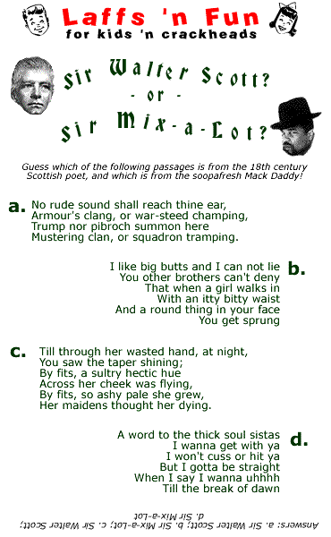
Olive Garden Review
04/20/2001 02:02:03 AM
This is my cousin Giorgio from Italy. Word has it that he knows Italian food like nobody else! So last night we took him to Olive Garden. He orders the Capellini Pomodoro, with Roma tomatoes, garlic, fresh basil and a touch of balsamic vinegar.
He takes a bite and throws his fork down. "What the fuck is this shit?" he says. "What are you talking about?" I say, "It's fuckin' Capellini Pomodoro!" He says, "Che cazzo stai dicendo? You gotta be kidding! This shit I wouldn't feed to my dogs!" So I says, "Hey, cugino, don't break my fuckin' balls here. It's Italian!" And this fucking mutt, he says, "Testa di merda, nessuno me lo ficca in culo! I just came here from Napoli, don't tell me this shit is Italian, they wouldn't sell this even in the hypermart! Get me outta this place, it's a disgrace to the Italian people! È un disonore!"
Nobody talks to me that way, I don't care if he's my own brother, he talks to me like that, I'm gonna break my foot off in his freakin' ass, right? So I says, "Hey, finocchio, get the fuck outta here, go back to fuckin' Italy and eat your genuine fuckin' Italian food!" And I dump the plate right into his fuckin' lap. Well, then Giorgio gets mad, right? He screams "Vaffanculo!" and lunges at me like he's gonna hit me or somethin', so I bust his fuckin' head for him and he goes down face first right into my wife's eggplant parmigiana, which is lightly breaded eggplant, fried and topped with marinara, mozzarella and parmesan.
So then I'm getting ready to break this pistolino's arms when the waitress comes by with the bruschetta, sees what's going on, and starts screaming. So then we all hadda get outta there quick, you know what I'm sayin'? Anyway, Olive Garden -- when you're there, you're fuckin' family.
The President Who Could Drive a Car
05/31/2001 02:13:12 AM
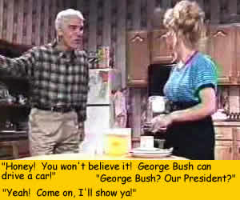
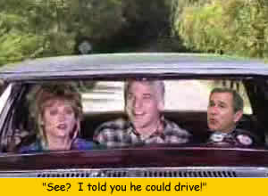
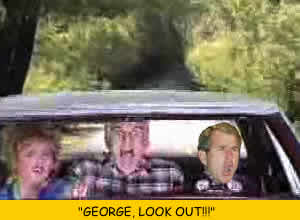
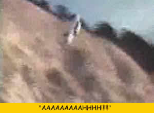
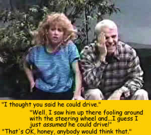
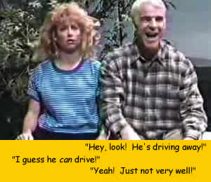
How to Make Love to a Single Girl
06/20/2001 02:21:45 AM
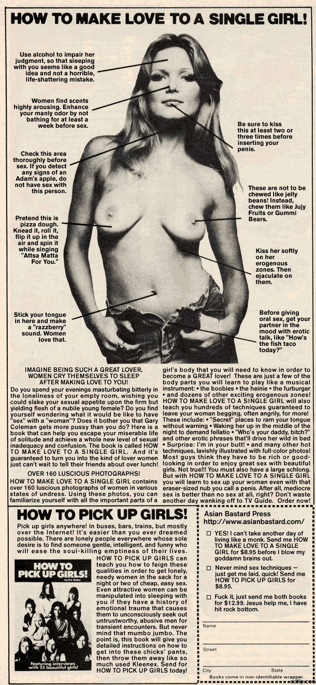
- - - Comments - - -
COMMENT:
AUTHOR: Enigma
EMAIL: eingmaREMOVE@the-enigma.net
IP: 68.81.172.183
URL: http://www.the-enigma.net/blog
DATE: 09/14/2004 10:54:47 PM
hilarious
The Dark Side of Fame
06/27/2001 02:26:23 AM
Cheers to BoyKani, the latest weblogger to be consumed by that crazed starmaking machine known as Blogs of Note. Sure, it's all good right now, but take it from me, man...there's a dark side to fame. It's easy to be seduced by the perks of stardom. Sex. Drugs. One-legged transvestite prostitutes. But it's not all fun, you know. One day you wake up in a hotel room in Amsterdam with a massive hangover and find yourself lying between a pair of leather-clad midget biker chicks, and not only is the money gone, but you dimly recall trying to use one of the midget biker chicks' butt-cracks as an ATM. You think to yourself, I'm holding an empty bottle of Night Train. Why don't I have to pee? Then you put your hand down there and think: I'm wearing a diaper. Then you glance down and you realize: Wait, that's not a diaper -- that's my mom's lace tablecloth. You look around and the epiphany hits you, with the force of a physical blow: you're not in a hotel room in Amsterdam after all. It's Thanksgiving, and you're lying on top of your parents' dining room table with your private parts lodged in the turkey. That's when you realize the party's over. Sounds crazy, I know. But that's what fame does to a guy. One day you're posting fake nudes of Britney Spears to your weblog, the next day you're being questioned by National Park Rangers about a string of raccoon molestations in the tri-state area. Fame is a whore. Not only that, but it's the "bad" whore, not the good one who looks like Nicole Kidman and doesn't have five kinds of syphillis doing the "robot" in her crotch. No, this is the one who lures you back to her cheap motel room with the promise of a $10 half-and-half and ends up cold-cocking you after you double over with vomiting when you see her in a decent light and realize that she looks like post-Parkinson's Muhammad Ali after ten rounds with George Foreman's indoor grill. That's the kind of whore Fame is. And Blogger is her pimp.
If I sound bitter and cynical, well...it's because I'm feigning those qualities for humorous effect. But the point is, Fame is ephemeral. It's shallow. It's a tasty snack that has no nutritional value. The enlightened soul cares not for such things. I sure don't. I mean, yeah, I'd kinda like Ev to win a free round the world trip or something so I can hang onto my last remaining days as a Blog of Note until I slip off, screaming, my fingernails still embedded in the very living rock of the Temple of Popularity, spiraling down into the stinking bottomless abyss of anonymity. But other than that, I'm so above all this. I embrace my imminent return to "Where Blog They Now?" status. I really do.
Where was I? Oh yeah: congrats, BoyKani! Rock on dude!
Ask the Giant Head of Tom Hanks Stranded on a Desert Island
06/29/2001 02:25:06 AM
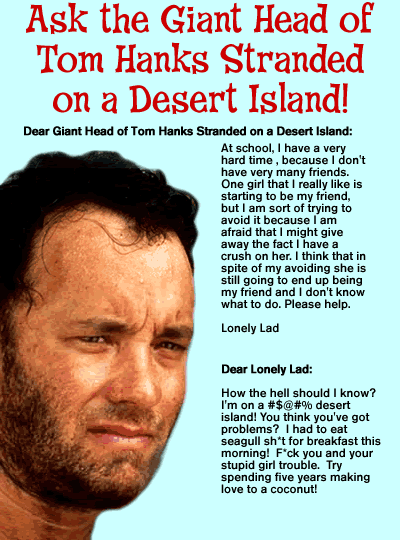
The Insult That Made a Web Geek Out of AB
07/13/2001 02:33:37 AM
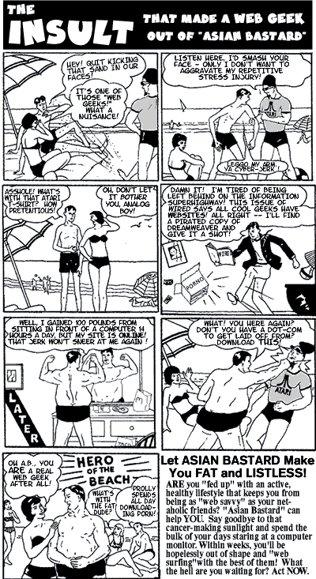
To Serve Nachos
07/17/2001 02:39:03 AM
[For some reason, nobody ever gets this joke, but I'm keeping it here because, dammit, it's funny! Bonus smarty points to you if you know what it refers to. -- AB]
- - - Comments - - -
COMMENT:
AUTHOR: Charlton Heston
EMAIL: jmc60641@yahoo.com
IP: 63.241.218.163
URL: http://no.... U r L!!
DATE: 05/21/2003 09:52:30 PM
damn good humor.
-----
COMMENT:
AUTHOR: Keely St. Clair
EMAIL: bunnieskill333@aol.com
IP: 64.252.23.231
URL: http://www.weirdsmobile.com/keely
DATE: 07/22/2003 08:56:50 AM
Bwahahaha!
-----
COMMENT:
AUTHOR: Asian Bastard
EMAIL: bastard@asianbastard.com
IP: 165.121.37.122
URL:
DATE: 07/22/2003 01:20:31 PM
Yes! Validation at last! Thank you!!
-----
COMMENT:
AUTHOR: groovebunny
EMAIL:
IP: 68.224.168.139
URL:
DATE: 04/01/2004 05:29:41 PM
Mmmmm nachos! I have to admit, that ep of The Twilight Zone is one of my faves. :)
Waiting for Pedro
07/25/2001 02:44:20 AM
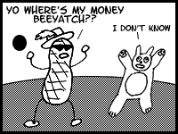
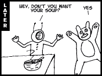
Soft As An Easy Chair
08/18/2001 03:10:32 AM
Tomorrow will be a grand day, a day of movies and laughter and cleaning products, yes, Formula 409 which smells like Satan's jock strap but wow does it clean! "Antibacterial" is the watchword. Why is the world so cruel when all I want to do is LOVE? Love: soft, clingy, redolent of wildflowers, clean sheets, Vaseline.... Yesterday I saw a small child running with a dog. Where are they now? Embittered, drunk on dandelion wine, devouring each other's feet out of sheer spite. Now there's a tick I'd like to pop with a spoon. Life, I'm telling you. I'm going to sleep now. Hugs and kisses for everyone, even those who smell like spinach. Much love, Barbra.
Laughing on the Outside: The Confessions of Soupy Sales
08/22/2001 03:20:42 AM

You know, these days people think of Soupy Sales as just a washed-up comedian.
They look at me and they see nothing more than a has-been funnyman, a guy past
his prime whose star has long faded. Kids today, they don't know from history.
I go to one of these fancy schmancy techno nightclubs, the bouncer won't even
let me in, the jerk. I gotta slip him a C-note just to let me use the goddamn
john. Used to be I'd walk into any joint on the Strip, you name it -- the Tropicana,
the Sands, Caesar's -- and the place would go nuts. Clappin', hootin', yellin'
"Hey Soupy! Soupy, you're the best! Throw me a pie, Soupy!"
I didn't buy a single drink from 1965 to 1977. The phone rang off the hook night
and day. Sammy, Frank, Dino -- they all wanted to be on my show. And the broads?
Get outta here! Listen, if you took all the broads I banged and laid 'em end to
end down Sunset Boulevard, you'd have one helluva sore dick by the time you got
to La Cienega, you know what I'm sayin'? Heh heh...I guess that was a little blue,
sorry.
I didn't always hafta work blue, you know. In '75 when I was doing Jr. Anything
Goes for ABC, Fred Silverman came to my trailer one day during rehearsals.
"Soupy," he said, "the kids just aren't tuning in like they used
to. The boys upstairs are saying we've gotta spice up the show a little, you know,
bring in some broads, show a little skin, maybe tell some dirty jokes, get the
crowd goin'."
"But Fred," I said, shaking my head. "This is a Saturday morning
kids' show. We've got standards to uphold. What am I gonna tell the parents when
they call in asking me why their rug monkeys are sitting there watching half-naked
showgirls on TV?"
"We want broads and dirty jokes on the show," Fred replied. "If
you don't like it, we can always bring in Skip Stevenson."
I didn't even have to think twice. I looked that bastard straight in the eye and
said, "Anything you say, Mr. Silverman!" So the naked chicks went on.
What can I tell you? It was the height of the Sexual Revolution. If this AIDS
thing hadn't come along, they'd be banging sheep on Sesame Street by now.
We lasted two more episodes, and ABC finally yanked the show after a naked dwarf
put his eye out trying to stuff a gerbil into Lyle Waggoner's nether regions and
threatened to sue.
After that, my career pretty much went on the skids. I've kept working -- a commercial
here, a skin flick there -- enough to keep me in blow, at any rate. But things
ain't what they used to be. Still, this old hoss ain't exactly ready for the glue
factory. I've got a life to live. I've got love in my heart and in my soul. I've
got it in my hand, too, and I'm aiming it right at all of you fans out there who
still remember the old Soupster. I'm not going anywhere, baby. I'm down, but I
ain't out.
The Nurturing Spider-Man
08/24/2001 03:15:19 AM
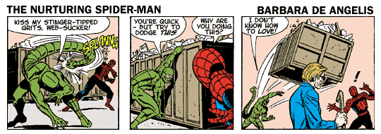
- - - Comments - - -
COMMENT:
AUTHOR: j-a
EMAIL: jeonga_kim@yahoo.co.uk
IP: 202.71.195.230
URL: http://www.whatarewedoinghere.blogspot.com
DATE: 04/13/2004 07:02:36 PM
oh boy (stuffs hanky into mouth to stop from laughing out loud at the office)
Joke of the Day
08/24/2001 03:16:46 AM
A 60 year-old woman came home one day and heard strange noises in her bedroom. She opened the door and discovered her 40 year-old daughter playing with a vibrator.
"What are you doing?" asked the mother.
"Mom, I'm 40 years old and look at me. I'm ugly. I'll never get married, so this is pretty much my husband." The mother walked out of the room, shaking her head.
The next day, the father came home and heard noises in the bedroom and upon entering the room, found his daughter using the vibrator.
"What the hell are you doing?" he asked.
His daughter replied, "I already told Mom. I'm 40 years old now and ugly. I will never get married, so this is as close as I'll ever get to a husband." The father walked out of the room, shaking his head.
The next day, the mother came home to find her husband with a beer in one hand and the vibrator in the other, watching a football game on TV.
"What on earth are you doing?" she cried.
The husband replied, "What does it look like I'm doing? I'm having a beer and watching football with my son-in-law!"
"That's in very poor taste," the mother said sternly.
The father looked down at the torpedo-shaped piece of plastic in his hand. He dropped it to the carpet and put his arm over his face. He burst into tears.
"God, what am I doing?" the father said, sobbing. "Our only daughter is upstairs losing herself in despair and negativity, and I'm sitting here feeling sorry for myself!"
The mother went to her husband and put a comforting arm around him. "It's okay," she said softly. "Let it out."
"I probably look like a real jerk right now, crying like a baby," the father husked, his voice quavering.
The mother tenderly stroked the father's silvery hair. "You're not a jerk for crying," the mother said. "I've been waiting forty-two years for you to finally open up to me!"
"God, I love you," the father said, holding his wife more tightly than ever.
"I love you, too," the mother said. "Now, let's go upstairs and help our daughter through her difficult time."
Hand in hand, husband and wife walked up the stairs. Neither knew what the future would hold for them or for their family, but they knew that today, they had crossed the most important threshold of their lives together -- the threshold of the heart.
Wellbutrin Comix
08/25/2001 03:35:51 AM
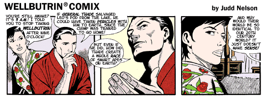
Wellbutrin Comix II
08/26/2001 03:37:47 AM
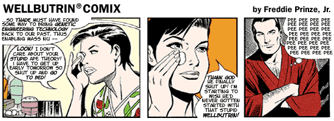
>> previously...
The Nurturing Spider-Man, Part II
08/30/2001 03:26:57 AM

- - - Comments - - -
COMMENT:
AUTHOR: j-a
EMAIL: jeonga_kim@yahoo.co.uk
IP: 202.71.195.230
URL: http://www.whatarewedoinghere.blogspot.com
DATE: 04/13/2004 07:01:54 PM
i need to find my inner child.
Hi & Taoist
09/02/2001 03:31:51 AM

Wellbutrin Comix III
09/05/2001 03:40:22 AM
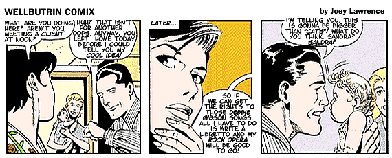
>> previously...
The Confessions of Jay-Z
09/06/2001 03:43:40 AM
Editor's
Note: Asian Bastard is currently on vacation. In his absence, we are
pleased and honored to welcome as guest blogger the hip hop artist Jay
Z.
Hard Knock Life
At the outset of my first blog entry for Asian Bastard, I'd like
to thank Mr. Bastard for the opportunity to express myself in this forum.
As a rap artist, it is a rare opportunity indeed when I am able to speak my mind
freely, outside of the constraints of my chosen art form. Though my lyrics and
stage persona may suggest otherwise, the hip hop lifestyle is not merely what
is referred to in the vernacular as "bitches and money." Indeed, the
myriad demands of the "thug life" and the need to satisfy the fans can
place an onerous burden on even the most stalwart rap musician.
Like many hip hop artists, I got my start on the Borscht Belt, playing resorts
and nightclubs in the Catskills during the lucrative summer season. Though some
of you may imagine the resort circuit as a romantic escapade, for a struggling
young unknown like myself it was anything but. At Grossinger's,
for instance, one of the swankiest hotels in the Catskills, I rarely enjoyed the
luxurious amenities the resort provided; rather, I spent my days onstage in the
auditorium, rehearsing under the apprenticeship of such legendary old school performers
as Shecky
Greene, Red Skelton
(God rest his soul), and Grandmaster
Melle Mel. It was a demanding life, but I was on Cloud Nine, fulfilling a
lifelong dream of singing and dancing, and pursuing an even grander vision of
stardom. As Shecky told me once, "If you want it, you need only dream it."
I have kept those words close to my heart ever since.
During my apprenticeship, I often kept the company of other young artists, some
of whom went on to achieve great success. For instance, perhaps the name Anne
Murray means something to you? Today she has millions of fans around the world,
but "back in the day" she was just another struggling singer/songwriter.
Annie and I were best pals from the beginning. She helped me through some tough
times, and I was a shoulder for her to cry on when she hit the many potholes on
her road to fame. In fact, her song "You Needed Me" was inspired by
our friendship. When I hear that song, and such lyrics as "You held my hand
/ When it was cold / When I was lost / You took me home / You gave me hope / When
I was at the end / And turned my life / Back into truth again," it's hard
to keep the tears from springing to my eyes, I kid you not! I haven't talked to
Anne in many years, but she remains one of my closest friends.
Now, this isn't a very well-known fact, and I have actually only told this story
to a few close friends, but my first real break in the business came at the hands
of none other than showbiz legend Buddy
Hackett. He was just finishing up a smash run on Broadway with The Music
Man, and I was fortunate enough to attend one of his farewell performances.
Backstage, I ran into an old Catskills chum who happened to be Buddy's road manager.
The next thing I knew, I was in Buddy's dressing room, face to face with one of
my greatest idols! Now, Buddy has a rep for being a hard-nosed, abrasive fellow,
but I must have caught him on a good night, for he was unfailingly kind to this
struggling rap artist. "Kid," Buddy said, chomping on a huge Cuban cigar
that must have cost more than my monthly salary, "this business is all about
image. It's all about marketing yourself. Find your niche and play it for all
it's worth."
Wise words indeed. I thanked Buddy and prepared to leave his dressing room. As
I turned, Buddy added, "You got talent, kid! I haven't seen hip hop stylin'
like yours since Big
Daddy Kane rocked the house at the Tropicana." I was stunned! Tears sprang
to my eyes as I thanked Buddy profusely for his extravagant -- and totally undeserved
-- praise. Buddy not only accepted my thanks, but put in a good word for me at
Caesar's Atlantic City, where I had my first "real" show.
And the rest, as they say, is history. My rise to stardom is already amply documented,
so I won't go into it here. But now that I'm at the top of my game and rousing
audiences to their feet from Atlantic City to Fresno, I haven't forgotten my Borscht
Belt roots or the people who brought me here. And no matter where I go from here,
I'll always have a song on my lips and love in my heart for my mentors and fellow
travellers on the long hard road to success. "Big ups" and "props"
to all of my "homies!"
Daisuke & Monano
09/08/2001 09:18:33 AM
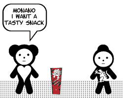
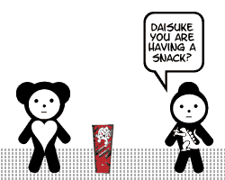
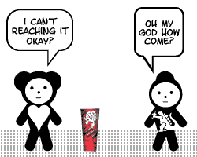
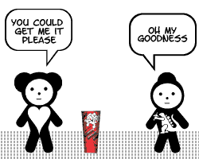
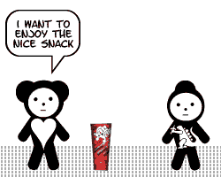
Humanitarian Daily Ration Cookbook
10/09/2001 03:53:18 AM
Sample Recipes:
HUMANITARIAN DAILY RATION (HDR) CASSEROLE
Ingredients:
1 Humanitarian Daily Ration (HDR)
1/2 cup goat's milk
1 tsp. salt
1 cup water
Instructions:
1. Heat contents of one (1) HDR in 1 cup water
2. Combine contents of HDR with goat's milk
3. Add salt to taste and stir until mixed
4. Pour into baking pan and bake in preheated oven at 400° until top is
golden brown
5. Rise up against Taliban oppressors
STIR-FRIED HUMANITARIAN
DAILY RATION (HDR) WITH LENTILS
Ingredients:
1 Humanitarian Daily Ration (HDR)
1 cup lentils
1/2 cup onion, chopped
1 tsp canola or olive oil
Instructions:
1. Combine HDR with onion and lentils in large skillet
2. Sauté in oil at medium-high heat, stirring frequently, until onion
is tender
3. Serve over rice or pasta
4. Locate and assassinate Osama bin Laden
ORANGE GLAZED HUMANITARIAN DAILY RATION (HDR)
Ingredients:
1 Humanitarian Daily Ration (HDR)
1/2 cup honey
1/4 cup orange peel, grated
1 tbsp brown sugar
1 can frozen orange juice concentrate
Instructions:
1. Combine honey, brown sugar, and orange peel in large bowl
2. Add thawed orange juice concentrate and stir until mixture is smooth
3. Stir in contents of HDR
4. Pour into baking pan and bake at 375° for 30 minutes, basting at intervals
5. Recognize the legitimacy of the U.S.-led global coalition against the terrorist
network
6. Serve over rice
- - - Comments - - -
Heavily Medicated
11/10/2001 08:43:32 AM
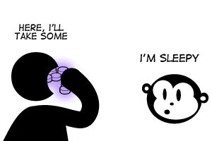
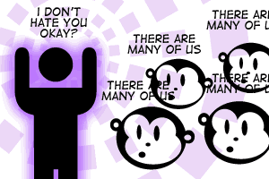
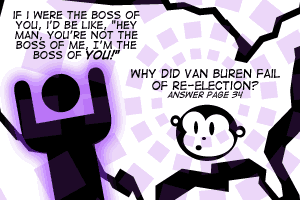
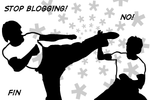